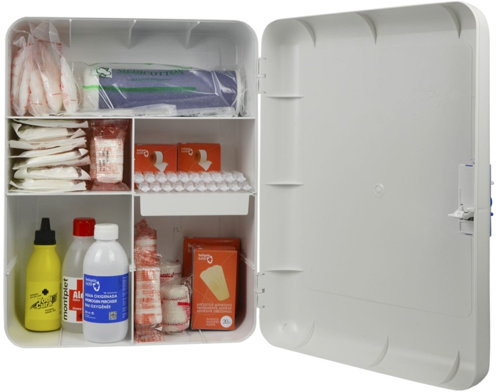

Botiquín de Primeros Auxilios
Tabla de Contenido
Navega por la imagen para saber más acerca de las definiciones de los elementos que contiene un botiquín.
Un botiquín de primeros auxilios bien provisto puede ayudarte a responder eficazmente ante lesiones y emergencias comunes. Mantén al menos un botiquín de primeros auxilios en tu casa y uno en tu automóvil. Guarda tus botiquines en un lugar fácil de alcanzar y fuera del alcance de los niños pequeños. Asegúrate de que los niños de edad suficiente para entender el propósito de los botiquines sepan dónde están guardados.
Puedes comprar botiquines de primeros auxilios en muchas farmacias o armar los tuyos propios. Es posible que quieras adaptar tu botiquín según tus actividades y necesidades. Un botiquín de primeros auxilios podría incluir lo siguiente:
Suministros básicos
- Cinta adhesiva
- Vendas elásticas
- Tiras de vendas y vendajes de "mariposa" en diferentes tamaños
- Pegamento extra fuerte
- Torniquete de goma o catéter francés n.º 16
- Vendas estériles antiadherentes y rollo de gasa en varios tamaños
- Protector o almohadilla para los ojos
- Vendaje triangular grande (puede usarse como cabestrillo)
- Férula de aluminio para los dedos
- Compresas de frío instantáneo
- Bolas de algodón e hisopos de algodón
- Guantes desechables sin látex, varios pares
- Cinta adhesiva
- Vaselina u otro lubricante
- Bolsas de plástico de diferentes tamaños
- Alfileres de gancho de varios tamaños
- Tijeras y pinzas
- Desinfectante para manos
- Ungüento antibiótico
- Solución antiséptica y toallitas
- Solución para el lavado de los ojos
- Termómetro
- Pera u otro dispositivo de succión para el lavado de heridas
- Solución salina estéril para irrigación, enjuague
- Barrera respiratoria (mascarilla quirúrgica)
- Jeringa, taza o cuchara para medicamentos
- Manual de primeros auxilios
- Agua oxigenada para desinfectar
Medicamentos
- Gel de aloe vera
- Loción de calamina
- Medicamentos antidiarreicos
- Laxante
- Antiácidos
- Antihistamínicos, como difenhidramina
- Crema de hidrocortisona
- Medicamentos para la tos y el resfriado
- Medicamentos personales que no necesitan refrigeración
- Autoinyector de epinefrina, si lo receta tu médico
- Analgésicos, como paracetamol (Tylenol, otros), ibuprofeno (Advil, Motrin IB, otros)
Considera también tener siempre aspirina en el botiquín de primeros auxilios. La aspirina puede salvar la vida de un adulto con dolor torácico. Si tú u otra persona tiene dolor torácico por primera vez o sin ninguna explicación, o podría estar teniendo un ataque cardíaco, solicita de inmediato asistencia médica de emergencia. Luego mastica una aspirina de concentración regular. No obstante, no tomes aspirina si eres alérgico a la aspirina, tienes problemas de sangrado o tomas otro medicamento anticoagulante, o si tu médico te dijo previamente que no lo hicieras.
Nunca des aspirina a los niños.
Elementos para casos de urgencia
- Números de teléfono de emergencia, entre ellos información de contacto del pediatra y del proveedor de atención médica de la familia, servicios de emergencia locales, proveedores de servicios de emergencia en carreteras y la línea de ayuda para casos de intoxicación. Hay dos formas de obtener ayuda del centro para el control de intoxicaciones en los Estados Unidos: en línea, en www.poison.org, o por teléfono al 1-800-222-1222. Estas opciones son gratuitas, confidenciales y están disponibles las 24 horas del día.
- Formularios de consentimiento médico para cada miembro de la familia
- Formularios de antecedentes médicos para cada miembro de la familia
- Linterna pequeña y resistente al agua o linterna frontal y baterías de repuesto
- Fósforos resistentes al agua
- Bloc de notas pequeño e instrumento de escritura impermeable
- Manta isotérmica
- Teléfono móvil con cargador solar
- Protector solar
- Repelente de insectos
Revisa tu kit
Controla tu botiquín de primeros auxilios con regularidad para asegurarte de que las pilas de la linterna funcionen y para reemplazar los suministros que se hayan vencido o utilizado.
Considera realizar un curso de primeros auxilios en la Cruz Roja Americana. Comunícate con tu delegación local para obtener más información sobre las clases.
Prepara a los niños para las emergencias médicas de una manera que sea adecuada para su edad. La Cruz Roja Americana ofrece diversos recursos útiles, incluso clases diseñadas para ayudar a los niños a entender y a usar las técnicas de primeros auxilios.